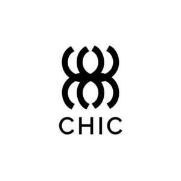

Trade Mark Journal No.2025/019 9 May 2025
UK00004191082 18 April 2025 (25,35)

- Class 25
- Clothing; Knitwear [clothing]; Jackets [clothing]; Ready-to-wear clothing; Woolen clothing; Furs [clothing]; Garments for protecting clothing; Layettes [clothing]; Clothing layettes; Linen clothing; Headbands [clothing]; Headbands for clothing; Gloves [clothing]; Gloves as clothing; Clothes; Aprons [clothing]; Maternity clothing; Kerchiefs [clothing]; Jerseys [clothing]; Denims [clothing]; Shorts [clothing]; Cashmere clothing; Capes (clothing); Oilskins [clothing]; Gabardines [clothing]; Silk clothing; Leather clothing; Clothing of leather; Leather (Clothing of -); Collars [clothing]; Parts of clothing, footwear and headgear; Knitted clothing; Veils [clothing]; Windproof clothing; Hoods [clothing]; Corsets [clothing, foundation garments]; Embroidered clothing; Wristbands [clothing]; Belts [clothing]; Belts for clothing; Rainproof clothing; Bandeaux [clothing]; Casual clothing; Waterproof clothing; Visors [clothing]; Jackets being sports clothing; Jackets (Stuff -) [clothing]; Stuff jackets [clothing]; Playsuits [clothing]; Bottoms [clothing]; Clothing for leisure wear; Ready-made clothing; Latex clothing; Trunks being clothing; Woven clothing; Infant clothing; Drawers [clothing]; Drawers as clothing; Leisure clothing; Clothing for sports; Sports clothing; Ties [clothing]; Clothing for children; Athletic clothing; Muffs [clothing]; Bodies [clothing]; Clothing for babies; Tops [clothing]; Clothing for infants; Clothing for cycling; Pockets for clothing; Weatherproof clothing; Water-resistant clothing; Fabric belts [clothing]; Triathlon clothing; Handwarmers [clothing]; Clothing for skiing; Beach clothing; Chaps (clothing); Thermal clothing; Men's clothing; Cowls [clothing]; Fishing clothing; Braces for clothing; Mitts [clothing]; Dance clothing.
- Class 35
- Retail services connected with the sale of clothing and clothing accessories; Design of advertising logos; Banner advertising; Design of advertising flyers; Design of advertising brochures; Advertising services to create corporate and brand identity; Design of advertising materials; Graphic advertising services; Placement of design staff; Online retail store services relating to clothing; Online retail store services in relation to clothing; Online retail services relating to jewelry; Online retail store services relating to cosmetic and beauty products; Online retail services relating to clothing; Online retail services relating to cosmetics; Retail store services in the field of clothing; Online retail services relating to handbags; Online retail services for downloadable virtual clothing; Online retail services relating to toys; Online retail services relating to luggage; Online retail services in relation to downloadable virtual clothing; Online retail services in relation to downloadable virtual footwear; Online retail services in relation to downloadable virtual handbags; Online retail services in relation to downloadable virtual headwear; Online advertising services; Mail order retail services for cosmetics; Advertising the goods and services of online vendors via a searchable online guide; Mail order retail services for clothing; Mail order retail services for clothing accessories; Retail services relating to jewelry; Providing a searchable online advertising guide featuring the goods and services of online vendors; Online retail services in relation to downloadable virtual works of art; Online retail services for downloadable ring tones; Online ordering services; Business management of wholesale and retail outlets; Retail services relating to clothing; Retail services in relation to downloadable virtual clothing; Providing online marketplaces for sellers of goods and or services; Retail services in relation to jewellery; Retail services in relation to downloadable virtual footwear; Retail services in relation to downloadable virtual handbags; Retail services in relation to clothing; Providing a searchable online advertising guide featuring the goods and services of other on-line vendors on the internet; Mail order retail services connected with clothing accessories; Retail services in relation to clothing accessories; Administration of the business affairs of retail stores; Retail services in relation to furnishings; Retail services in relation to bags; Retail services in relation to footwear; Business management of retail outlets; Retail services in relation to toys; Retail services in relation to downloadable virtual headwear; Retail services in relation to fashion accessories; On-line advertising and marketing services; Retail services in relation to hair products; Business merchandising display services; Retail services connected with the sale of subscription boxes containing cosmetics; Retail services in relation to luggage; Retail services relating to sporting goods; Provision of an online marketplace for buyers and sellers of goods and services; Retail of third-party pre-paid cards for the purchase of clothing; Providing online commercial directory information services; Online data processing services; Advertising services for the promotion of e-commerce; Wholesale services in relation to clothing; Wholesale services relating to clothing; Wholesale services in relation to footwear; Wholesale services relating to jewelry; Retail services in relation to toiletries.
Chic Apparel LTD